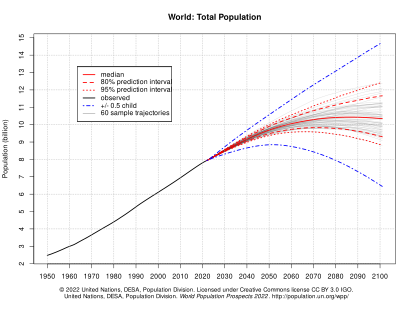

Population Growth
Population growth is the increase in the number of people in a population or dispersed group. Actual global human population growth amounts to around 83 million annually, or 1.1% per year.The global population has grown from 1 billion in 1800 to 7.9 billion in 2020.The UN projected population to keep growing, and estimates have put the total population at 8.6 billion by mid-2030, 9.8 billion by mid-2050 and 11.2 billion by 2100. However, some academics outside the UN have increasingly developed human population models that account for additional downward pressures on population growth; in such a scenario population would peak before 2100.
World human population has been growing since the end of the Black Death, around the year 1350. A mix of technological advancement that improved agricultural productivity and sanitation and medical advancement that reduced mortality increased population growth. In some geographies, this has slowed through the process called the demographic transition, where many nations with high standards of living have seen a significant slowing of population growth. This is in direct contrast with less developed contexts, where population growth is still happening. Globally, the rate of population growth has declined from a peak of 2.2% per year in 1963. The global human population is projected to peak during the mid-21st century and decline by 2100.
Population growth alongside increased consumption is a driver of environmental concerns, such as biodiversity loss and climate change, due to overexploitation of natural resources for human development. International policy focused on mitigating the impact of human population growth is concentrated in the Sustainable Development Goals which seek to improve the standard of living globally while reducing the impact of society on the environment while advancing human well being.

Population projections are attempts to show how the human population statistics might change in the future. These projections are an important input to forecasts of the population's impact on this planet and humanity's future well-being. Models of population growth take trends in human development, and apply projections into the future. These models use trend-based-assumptions about how populations will respond to economic, social and technological forces to understand how they will affect fertility and mortality, and thus population growth.
The 2019 projections from the United Nations Population Division showed that annual world population growth peaked at 2.1% in 1968, has since dropped to 1.1%, and could drop even further to 0.1% by 2100, which would be a growth rate not seen since pre-industrial revolution days Based on this, the UN projected that the world population, 8 billion as of 2022, would level out around 2100 at 10.9 billion,assuming a continuing decrease in the global average fertility rate from 2.5 births per woman during the 2015–2020 period to 1.9 in 2095–2100, according to the medium-variant projection.